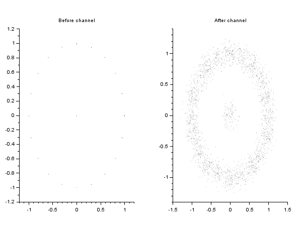

Description
This function simulates various distortions than can arise through a radio propagation channels. The parameter structure enables to specify the different possible distortions is documented here.
Example
prm = chn_simu_prm(); // Add white noise prm.sigma_wn = .1; mod = mod_init('qpsk',fs=1e6,fi=100e3,fsymb=10e3,'c'); [mod,x] = mod_process(mod,prbs(nsymb=100)); scf(0); clf(); plot_const(x); xtitle("Before channel"); x = chn_simu(x,prm); scf(1); clf(); plot_const(x); xtitle("After channel"); |  |  |

Before and after channel simulation